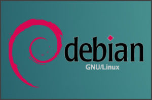

Mes Projets
Voici une sélection des projets réalisés dans le cadre de mon BTS SIO.

Gestion de Serveurs Debian
Installation et configuration de serveurs Debian pour des environnements professionnels, incluant la gestion des utilisateurs, la sécurité des données et l'administration des bases de données.
Projet de Virtualisation
Mise en place de machines virtuelles pour simuler un réseau complexe et tester des solutions sans perturber un environnement réel.

Audit de Sécurité
Identification des failles de sécurité dans les systèmes et réseaux, accompagnée de solutions concrètes et adaptées.